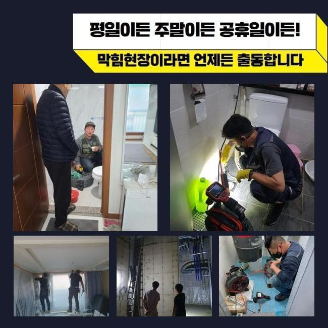
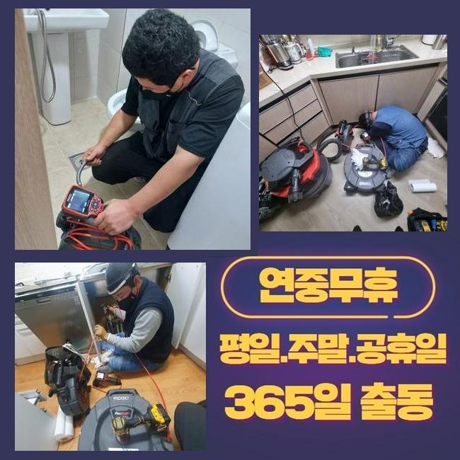
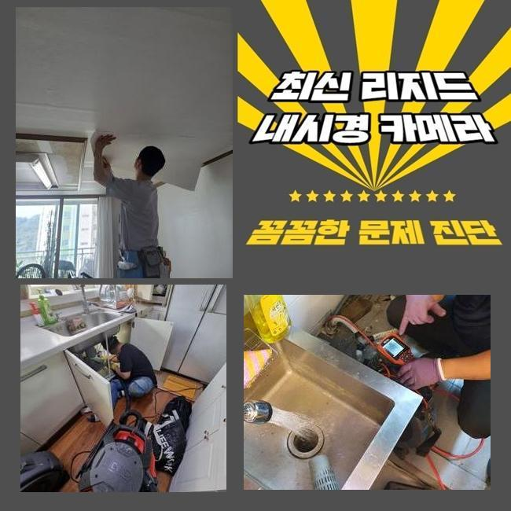
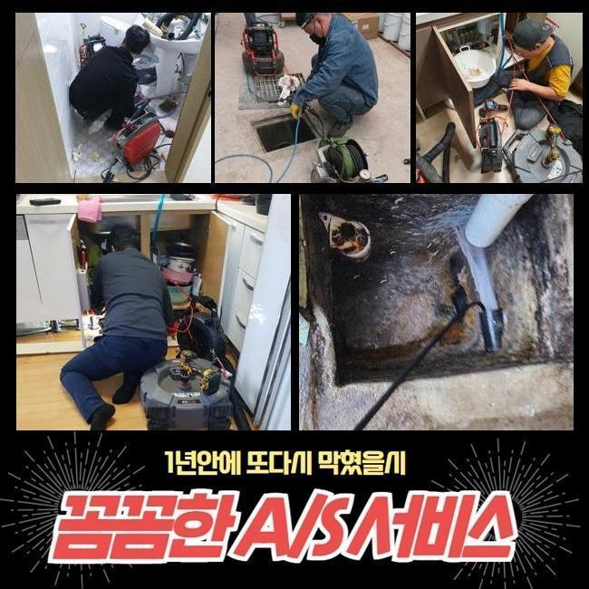
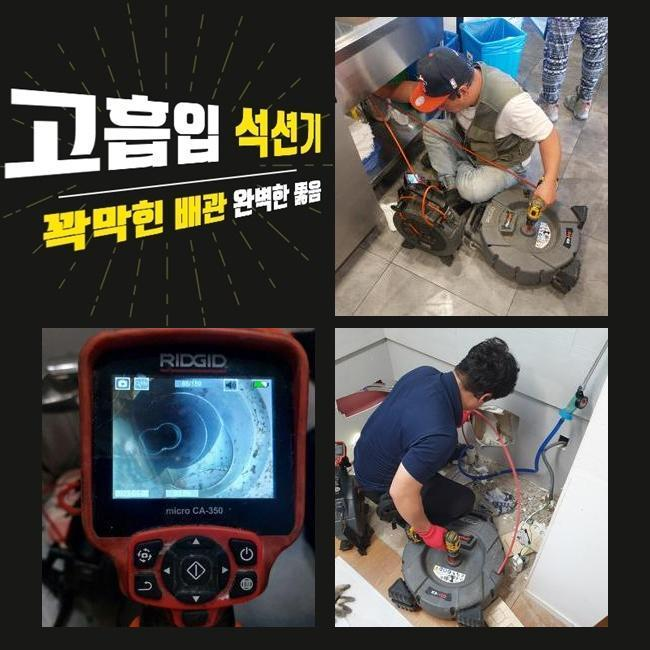
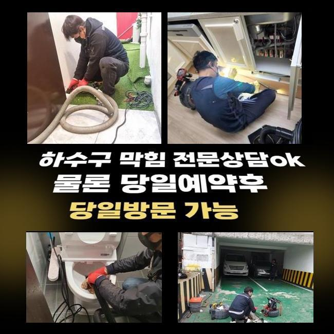

🏠 용산 동자동변기역류 이촌동 하수구뚫는업체 설비업체
서울 용산구 싱크대막힘 전문 시공 후기

📋 작업 개요
- 위치: 서울 용산구, 용산구, 서울
- 서비스 유형: 싱크대막힘, 변기막힘, 하수구막힘, 배관막힘, 누수수리, 역류해결, 뚫는업체, 배관청소, 고압세척, 설비공사, 악취차단
- 작업 일시: 2025. 2. 16. 1:17
- 업체명: 하수구수사대 (010-5615-2118)
🔍 문제 상황
용산 원효로4가싱크대막힘 한강로동 하수관고압세척 배관공사
배관이 막혀 고생하셨던 적이 한번 정도는 있었을 것이라 짐작을 내릴수가 있겠는데요
금일 설명드리는 내용을 읽어보신다면 추후 도움이 될수 있을거라 생각해요
저희들은 저번주 화장실 물막힘으로 문의하신 고객의 상황을 처치해 드렸죠
고객께서는 욕실 배수공에 잔류하는 오수가 기다려도 소멸되지않아 일상에 불편함이 가속되셨는데 저희팀이 이동하여 배관을 정확하게 관측하고 원인증상을 알아냈죠
그리고 그것들을 조속히 처리해서 손님분께서 집안 시설을 편하게 쓰실수 있게 도움을 드렸어요
그것에 더하여 의뢰인분에게 주의할 부분들을 면밀히 알려드려 추후 생길수있는 배수관 문제들을 방지하도록 조치해 드렸답니다
p형트랩은 파이프 안쪽에서 하수가 정상적으로 빠지는걸 제한하여 배관막힘을 촉발시킬수가 있죠
거기에 더해 역류문제까지 출몰하기 쉬운 경우 방수성능이 순조롭게 이루어지지 않아 다른 측면의 말썽이 표출되기도 합니다
P트랩은 위생적인 시설물 관리에는 긍정적이지만 잔재들이 쌓이고 막힘을 유발하는 결점들도 존재한답니다
그렇기에 피트랩을 쓰신다면 사용자의 주의가 요망됩니다
누증된 이물을 치우고 P트랩을 확인한 뒤에 적합한 때에 세척작업을 시행해 배수시스템이 올바르게 될수있게 만들어야하죠
그렇지 않으면 배관이 계속적으로 차단돼 골치아픈 사태가 발생 가능한 수 존재해요
그렇기에 꾸준한 검사와 세척이 필요해요

🔎 원인 분석
💡 전문가 진단: 정밀 진단 장비를 사용하여 슬러지의 고착 여부를 판명하고 타격/세척 작업을 실시했습니다.
우선적으로 하수구고장을 처리하려 아래세대로 가서 파이프점검구를 열어보기로 했어요
이물들이 날려서 근방이 오염되지 못하도록 보양장치를 하고 업무를 이어나갔어요
업무 전엔 주변거주인과의 불화를 차단하는 사전조치가 필요합니다
안 그러면 세척업무가 연기되거나 심각한 상황에선 못하는 경우가 생길수도 있답니다
저희들은 관련된 대처법을 체화하고 있기 때문에 침착하게 응대하고 있답니다
이런식의 대처를 바탕으로 침착하게 수리를 해나갔고 통수고장을 처치할수가 있었습니다
이런 과정을 바탕으로 차후에 비등한 사태가 생길수있는 경우에는 침착하게 대응해 나갈수가 있는거죠
물이 갑자기 안내려갈때 희석제를 투입하거나 가지고 있으신 도구들을 통해서 처리하는 경우도 있으나 여러번 도전하여도 뚫음이 요원하다면 전문가의 조력을 받는게 좋아요
우리들은 최첨단 장비들과 테크닉으로 침착하게 고장을 처치할수 있어요
최근에 하수관과 연관된 기공들이 많은 관계로 결단에 까다로움이 있을수가 있는데요
그리고 확실치않은 사람들도 꽤 있다고 파악중에 있답니다
이러한 사람들이 온다면 곤란한 상황에 처했을때 포기해버리거나 건성으로 덮어버리고 귀가하기도 합니다
우리팀은 이와 달리 맡은바 책임을 다해 작업을 끝낸다는걸 말씀드립니다
거기에 더해 손님분의 추가적인 요청에도 민첩하게 응대해서 문제들을 정리해 드려요

🔧 작업 과정
늦어진다면 막힘은 한층 심각해지기 때문이랍니다
파이프가 차단된다면 수분이 올라오거나 아래층으로 퍼져나가기도 합니다
그럴때는 빨리 조처해야 되는데요
장소에 도착해서 형편을 살펴보니 계속적으로 물방울이 토출되고 있었답니다
찌꺼기로 인하여 나타날수도 있지만 간간이 배관부속에 고장이 일어났을때도 있답니다
그러하기에 수리하려면 원천적인 요인을 파악하는 것이 필요해요
요번엔 노폐물 세척만으로는 해결을 담보할수없는 형편이었기에 그러한 것들을 참고하여 시공해 나갔습니다
해당되는 장애가 나타나는건 하수관에 생활하수가 편하게 빠져나가지 못하기 때문이죠
만일 이런 고장이 일어나면 즉시 우리에게 의뢰하시길 부탁드립니다
우선하여 하수관 내측에 상존하는 수분을 없애려 석션장비를 사용했죠
흡입기계는 하수관 내측의 슬러지를 빠르게 없애주고 배수문제를 해결합니다
흡입기계로 노폐물이 쌓인 처소를 능률적으로 정리할수가 있었죠
이후엔 내시경cctv를 써서 안쪽을 관찰했는데 오염물질이 소량 꺾인 관로에 쌓여있는 모습을 파악했어요
그것들을 정리하려 분쇄장비와 내시경기계를 동반하여 깨끗하게 세정하였어요
석션장비로도 소쇄가 곤란한 노폐물들은 이러한 방책으로 처리할수가 있답니다
파이프 내부에 이물이 잔류한다면 그로 인해 이차적인 문제들이 생길수있는 수 있으므로 세밀한 세정은 필수랍니다
간혹 PVC소제구를 열어 부수적인 세정을 할때도 있답니다
배관소제구가 있는 이유로 청소업무가 복잡해지기도 하나 저희들은 능숙한 테크닉으로 조속히 마무리해드려요
아래세대의 천장부의 파이프 덮개를 개방한후 분쇄기를 넣어서 세척하였습니다
다량의 슬러지가 쌓여있는게 드러났습니다
떨어져나간 슬러지들을 흡입기기로 정리하고 파이프내부를 내시경카메라로 확인한 뒤에 사용에 이상이 없단 사실을 확인할수 있었죠
공정을 마무리한후 배관소제구를 덮은뒤 누수 여부를 점검하여 지장이 없다는걸 인지했습니다
내시경cctv로 금번에 작업한 지점의 물막힘은 다양한 고형물에 세정제가 뒤섞여 발생한 것으로 확인되었죠


✅ 작업 완료
해당 사안은 우리팀이 자주 만나는 말썽 중 한가지이며 올바른 사용이 요청된다고 설명드렸습니다
빨간날에도 찾아뵙고 하수관 막힘 상황의 세척을 도와드릴 수 있어요
관 안을 탐검하는 배관카메라는 이물의 성격을 진단하고 본질적인 장애를 규명하는데 핵심적 역할을 합니다
이번의 욕실공간 배수구 막힘상황은 파이프 벽면에 상존했었고 P형트랩 체결부분에 크고작은 노폐물이 가득한게 확인되었답니다
저희들은 계속해서 기술수준을 올려서 만족할만한 작업을 해드릴수 있게 노력하겠습니다
물막힘이 나타나면 주저하지마시고 즉시 저희측에 문의해 주세요




⚠️ 베란다 누수 및 방수 관리 방법
- ✅ 비가 많이 올 때 창틀 주변이나 아래층 천장에 얼룩이 생기는지 정기적으로 확인해 보세요.
- ✅ 우수관 주변 실리콘 마감이 들뜨거나 깨진 틈새가 있는지 손상 여부를 수시로 체크하세요.
- ✅ 베란다 바닥 타일의 줄눈(메지)이 소실되면 그 틈으로 물이 침투하여 누수가 유발됩니다.
- ✅ 누수 의심 증상 발견 시 방치하면 아래층 손실이 커지므로 즉시 전문가의 진단을 받으십시오.
💡 핵심 정리
- 확실한 장비 작업(내시경 점검 및 샤프트 스케일링)으로 원인을 뿌리 뽑습니다.
- 작업 후 1년 이내에 동일한 부위 재발 시 100% 무상 A/S 서비스를 보장합니다.
- 서울 · 경기 · 인천 전 지역에 24시간 언제든 긴급 출동할 수 있도록 항시 대기 중입니다.
❓ 자주 묻는 질문 (FAQ)
🚨 서울 용산구 싱크대막힘 문제로 고민이신가요?
정확한 원인 진단과 확실한 시공으로 재발 없는 해결을 약속드립니다.
24시간 긴급 출동 | 서울 · 경기 · 인천 전지역 | 1년 내 재발 시 무상 A/S